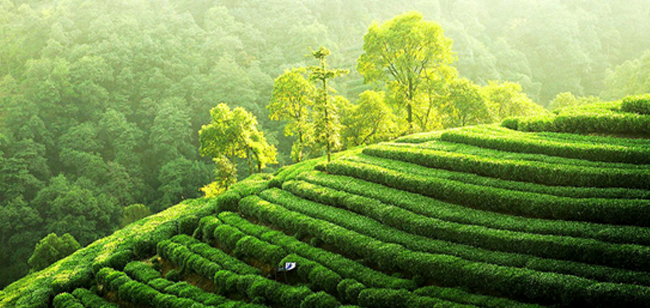
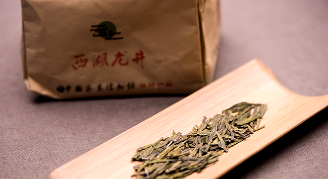
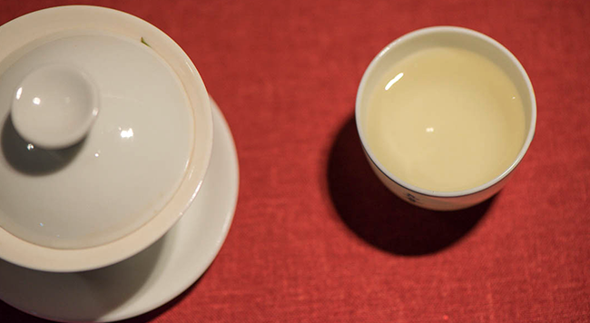
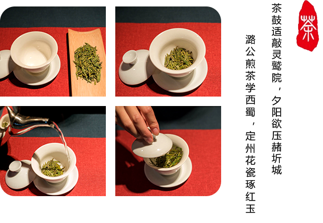
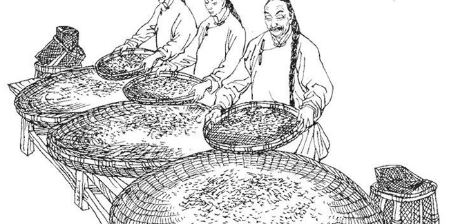

规格
250克/包
等级
一级
产地
梅家坞
包装方式
纸质
贮存方法
阴凉干燥处保存
一级产区包括传统的“狮（峰）、龙（井）、云（栖）、虎（跑）、梅（家坞）”五大核心产区。
梅家坞,山顶上常年云雾缭绕，特别适宜茶树的生长，早上太阳出来的时候，
阳光透过薄雾撒在茶树上，晶莹透亮，一片生机益然。

颜色翠绿，形状扁平，味甘醇美，香气馥郁。




杀青——通过高温，破坏鲜叶中酶的特性，制止多酚类物质氧化，以防止叶子变红；
同时蒸发叶内的部分水分，使叶子变软，为揉捻造型创造条件。随着水分的蒸发，
鲜叶中具有青草气的低沸点芳香物质会发消失，从而是茶叶香气得到改善。
揉捻——利用外力作用，使叶子揉破变轻，卷转成条，体积缩小，且便于冲泡。
干燥——蒸发水分，整理外形，充分发挥香气。